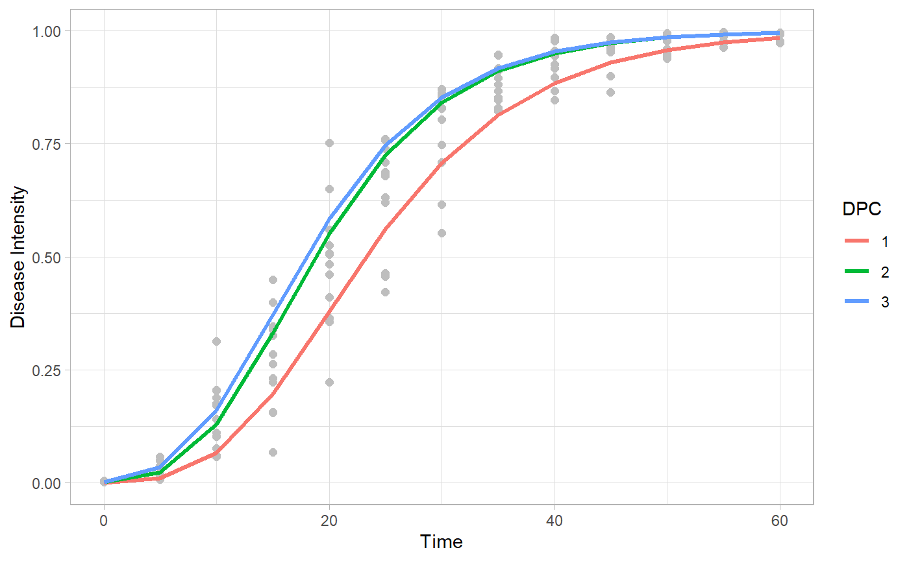

Fitting disease progress curves to classic epidemiological models
Kaique S Alves
2020-09-02
Source:vignettes/fitting.Rmd
fitting.RmdIntroduction
Use epifitter to fit the classic epidemiological models, Exponential, Monomolecular, Logistic, Gompertz, to your disease progress curves.
Hands on
Packages
First we have to load some packages. If you don’t have any of theses, please install it with the function instal.packages().
Data
dpc_data = sim_logistic( N = 100, y0 = 0.01, dt = 5, r = 0.1, alpha = 0.2, n = 7 ) head(dpc_data)
## replicates time y random_y
## 1 1 0 0.01000000 0.01000000
## 2 1 5 0.01638216 0.01087509
## 3 1 10 0.02672677 0.02619914
## 4 1 15 0.04331509 0.05112563
## 5 1 20 0.06946352 0.07988071
## 6 1 25 0.10958806 0.11064909
Using fin_lin()
f_lin = fit_lin(time = dpc_data$time, y = dpc_data$random_y) f_lin
## Results of fitting population models
##
## Stats:
## CCC r_squared RSE
## Logistic 0.9976 0.9953 0.2081
## Gompertz 0.9805 0.9617 0.4296
## Monomolecular 0.9402 0.8872 0.5895
## Exponential 0.9087 0.8327 0.6162
##
## Infection rate:
## Estimate Std.error Lower Upper
## Logistic 0.09931326 0.03313447 0.09819288 0.09819288
## Gompertz 0.07061144 0.06840426 0.06829847 0.06829847
## Monomolecular 0.05421581 0.09386198 0.05104203 0.05104203
## Exponential 0.04509745 0.09812358 0.04177958 0.04177958
##
## Initial inoculum:
## Estimate Lower Upper
## Logistic 1.012530e-02 9.489543e-03 1.080319e-02
## Gompertz 2.477319e-05 5.335777e-06 9.472106e-05
## Monomolecular -1.853719e+00 -2.435414e+00 -1.370518e+00
## Exponential 2.919032e-02 2.404434e-02 3.543764e-02head(f_lin$data)
## time y model linearized predicted residual
## 1 0 0.01000000 Exponential -4.605170 0.02919032 -0.019190319
## 2 5 0.01087509 Exponential -4.521280 0.03657352 -0.025698425
## 3 10 0.02619914 Exponential -3.642029 0.04582417 -0.019625031
## 4 15 0.05112563 Exponential -2.973469 0.05741462 -0.006288988
## 5 20 0.07988071 Exponential -2.527221 0.07193667 0.007944036
## 6 25 0.11064909 Exponential -2.201391 0.09013184 0.020517248head(f_lin$stats_all)
## # A tibble: 4 x 12
## best_model model r r_se r_ci_lwr r_ci_upr r_squared RSE CCC
## <int> <chr> <dbl> <dbl> <dbl> <dbl> <dbl> <dbl> <dbl>
## 1 1 Logi~ 0.0993 0.0331 0.0982 0.100 0.995 0.208 0.998
## 2 2 Gomp~ 0.0706 0.0684 0.0683 0.0729 0.962 0.430 0.980
## 3 3 Mono~ 0.0542 0.0939 0.0510 0.0574 0.887 0.589 0.940
## 4 4 Expo~ 0.0451 0.0981 0.0418 0.0484 0.833 0.616 0.909
## # ... with 3 more variables: y0 <dbl>, y0_ci_lwr <dbl>, y0_ci_upr <dbl>plot_fit(f_lin, point_size = 2)+ theme_minimal()

plot_fit(f_lin, point_size = 2, models = "Logistic")+ theme_minimal()

Using fin_nlin()
f_nlin = fit_nlin(time = dpc_data$time, y = dpc_data$random_y) f_nlin
## Results of fitting population models
##
## Stats:
## CCC r_squared RSE
## Logistic 0.9978 0.9956 0.0263
## Gompertz 0.9959 0.9929 0.0362
## Monomolecular 0.9168 0.8698 0.1495
## Exponential 0.8878 0.8256 0.1711
##
## Infection rate:
## Estimate Std.error Lower Upper
## Logistic 0.10042200 0.001529108 0.09739978 0.09739978
## Gompertz 0.07059347 0.001436851 0.06775359 0.06775359
## Monomolecular 0.02358763 0.001092637 0.02142807 0.02142807
## Exponential 0.01949766 0.001014330 0.01749288 0.01749288
##
## Initial inoculum:
## Estimate Std.error Lower Upper
## Logistic 9.916964e-03 7.089039e-04 8.515844e-03 1.131808e-02
## Gompertz 1.065658e-07 1.096341e-07 -1.101217e-07 3.232532e-07
## Monomolecular -2.395922e-01 3.568321e-02 -3.101186e-01 -1.690658e-01
## Exponential 1.784961e-01 1.474927e-02 1.493447e-01 2.076474e-01
Using fin_nlin2()
f_nlin2 = fit_nlin2(time = dpc_data$time, y = dpc_data$random_y) f_nlin2
## Results of fitting population models
##
## Stats:
## CCC r_squared RSE
## Logistic 0.9978 0.9956 0.0263
## Gompertz 0.9965 0.9935 0.0337
## Monomolecular 0.9691 0.9401 0.0973
##
## Infection rate:
## Estimate Std.error Lower Upper
## Logistic 0.101173338 0.001894931 0.097427865 0.097427865
## Gompertz 0.063685453 0.001750236 0.060225980 0.060225980
## Monomolecular 0.004507539 0.001567019 0.001410208 0.001410208
##
## Initial inoculum:
## Estimate Std.error Lower Upper
## Logistic 9.646596e-03 7.976178e-04 8.070044e-03 1.122315e-02
## Gompertz 3.187746e-06 2.740389e-06 -2.228839e-06 8.604332e-06
## Monomolecular -1.370600e-01 2.283646e-02 -1.821980e-01 -9.192207e-02
##
## Maximum disease intensity:
## Estimate Std.error Lower Upper
## Logistic 0.9967318 0.004777544 0.9872887 1.006175
## Gompertz 1.0380776 0.008403439 1.0214675 1.054688
## Monomolecular 3.3391017 0.971785324 1.4182950 5.259908
Using multi_fitter
Data
epi1 = sim_gompertz(N = 60, y0 = 0.001, dt = 5, r = 0.1, alpha = 0.4, n = 4) epi2 = sim_gompertz(N = 60, y0 = 0.001, dt = 5, r = 0.12, alpha = 0.4, n = 4) epi3 = sim_gompertz(N = 60, y0 = 0.003, dt = 5, r = 0.12, alpha = 0.4, n = 4) multi_epidemic = bind_rows(epi1, epi2, epi3, .id= "DPC") head(multi_epidemic)
## DPC replicates time y random_y
## 1 1 1 0 0.00100000 0.001174717
## 2 1 1 5 0.01515505 0.015746346
## 3 1 1 10 0.07878459 0.118866019
## 4 1 1 15 0.21411521 0.122554470
## 5 1 1 20 0.39266393 0.496247435
## 6 1 1 25 0.56723412 0.523364279multi_fit = multi_fitter(time_col = "time", intensity_col = "random_y", data = multi_epidemic, strata_cols = "DPC") multi_fit$Parameters
## DPC best_model model r r_se r_ci_lwr r_ci_upr
## 1 1 1 Gompertz 0.10336668 0.09106555 0.09819319 0.10854017
## 2 1 2 Logistic 0.15987156 0.24708395 0.14583457 0.17390856
## 3 1 3 Monomolecular 0.07576078 0.11857307 0.06902457 0.08249699
## 4 1 4 Exponential 0.08411078 0.30680335 0.06668109 0.10154048
## 5 2 1 Gompertz 0.12342904 0.08354279 0.11868292 0.12817516
## 6 2 2 Monomolecular 0.09619419 0.12121306 0.08930799 0.10308038
## 7 2 3 Logistic 0.17948911 0.25556716 0.16497018 0.19400804
## 8 2 4 Exponential 0.08329492 0.33096501 0.06449259 0.10209725
## 9 3 1 Gompertz 0.13046579 0.15925166 0.12141860 0.13951298
## 10 3 2 Logistic 0.17334403 0.22885456 0.16034266 0.18634541
## 11 3 3 Monomolecular 0.10709900 0.18753112 0.09644524 0.11775276
## 12 3 4 Exponential 0.06624503 0.26559761 0.05115627 0.08133380
## r_squared RSE CCC y0 y0_ci_lwr y0_ci_upr
## 1 0.9698887 0.3474840 0.9847142 0.0008581895 2.080329e-04 0.002793555
## 2 0.9127879 0.9428123 0.9544058 0.0109765629 6.711235e-03 0.017903858
## 3 0.9107623 0.4524460 0.9532973 -0.9272836404 -1.445556e+00 -0.518845575
## 4 0.6526553 1.1706870 0.7898263 0.0213897359 1.154992e-02 0.039612465
## 5 0.9820048 0.3187790 0.9909207 0.0004449199 1.086226e-04 0.001465707
## 6 0.9402802 0.4625196 0.9692210 -1.2138166850 -1.824077e+00 -0.735428623
## 7 0.9249881 0.9751821 0.9610326 0.0106439027 6.397761e-03 0.017658090
## 8 0.6129254 1.2628820 0.7600170 0.0238171569 1.225144e-02 0.046301251
## 9 0.9437538 0.6076656 0.9710631 0.0010879645 8.309697e-05 0.007044547
## 10 0.9348235 0.8732533 0.9663140 0.0213897963 1.361483e-02 0.033454195
## 11 0.8907567 0.7155731 0.9422224 -1.3524377651 -2.428488e+00 -0.614111745
## 12 0.6086478 1.0134559 0.7567198 0.0514179847 3.016009e-02 0.087659195head(multi_fit$Data)
## DPC time y model linearized predicted residual
## 1 1 0 0.001174717 Exponential -6.7467281 0.02138974 -0.02021502
## 2 1 5 0.015746346 Exponential -4.1511469 0.03257239 -0.01682605
## 3 1 10 0.118866019 Exponential -2.1297583 0.04960140 0.06926462
## 4 1 15 0.122554470 Exponential -2.0991997 0.07553325 0.04702122
## 5 1 20 0.496247435 Exponential -0.7006806 0.11502239 0.38122504
## 6 1 25 0.523364279 Exponential -0.6474775 0.17515666 0.34820762Estimate K?
multi_fit_K = multi_fitter(time_col = "time", intensity_col = "random_y", data = multi_epidemic, strata_cols = "DPC", nlin = T, estimate_K =T)
## Warning in log(y0/K): NaNs produzidos
## Warning in log(y0/K): NaNs produzidos
## Warning in log(y0/K): NaNs produzidos
## Warning in log(y0/K): NaNs produzidos
## Warning in log(y0/K): NaNs produzidos
## Warning in log(y0/K): NaNs produzidos
## Warning in log(y0/K): NaNs produzidos
## Warning in log(y0/K): NaNs produzidoshead(multi_fit_K$Parameters)
## DPC model y0 y0_se r r_se K
## 1 1 Gompertz 5.672582e-04 5.777076e-04 0.10494931 0.007032316 0.9933227
## 2 1 Logistic 2.236824e-02 5.252483e-03 0.16390874 0.010799195 0.9600186
## 3 1 Monomolecular -1.179268e-01 3.568169e-02 0.02049636 0.004332328 1.5511711
## 4 2 Logistic 1.371036e-02 3.115975e-03 0.21046346 0.011458909 0.9730824
## 5 2 Gompertz 2.769944e-05 4.216311e-05 0.13661554 0.007970055 0.9935258
## 6 2 Monomolecular -1.362744e-01 4.208267e-02 0.03033454 0.005056602 1.3130392
## K_se df CCC r_squared RSE y0_ci_lwr y0_ci_upr
## 1 0.017404286 49 0.9915548 0.9832052 0.05037703 -5.936888e-04 0.0017282051
## 2 0.014541321 49 0.9898038 0.9806456 0.05469346 1.181298e-02 0.0329234978
## 3 0.202305548 49 0.9717732 0.9450962 0.09101260 -1.896318e-01 -0.0462217373
## 4 0.009684661 49 0.9940717 0.9883808 0.04324905 7.448576e-03 0.0199721502
## 5 0.011739953 49 0.9938222 0.9877912 0.04459928 -5.703051e-05 0.0001124294
## 6 0.110928090 49 0.9652713 0.9328738 0.10359956 -2.208427e-01 -0.0517061019
## r_ci_lwr r_ci_upr K_ci_lwr K_ci_upr best_model
## 1 0.09081734 0.11908128 0.9583475 1.0282979 1
## 2 0.14220694 0.18561053 0.9307967 0.9892405 2
## 3 0.01179022 0.02920250 1.1446229 1.9577193 3
## 4 0.18743592 0.23349100 0.9536204 0.9925445 1
## 5 0.12059912 0.15263197 0.9699335 1.0171181 2
## 6 0.02017292 0.04049616 1.0901209 1.5359575 3Make graphics to compare curves and parameters
Curves
multi_fit$Data %>% ggplot(aes(time, predicted, color = DPC))+ geom_point(aes(time,y), color = "gray")+ geom_line()+ facet_wrap(~model, scales = "free_y")+ theme_light()

multi_fit$Data %>% filter(model == "Gompertz") %>% ggplot(aes(time, predicted, color = DPC))+ geom_point(aes(time,y), color = "gray", size =2)+ geom_line(size = 1.2)+ theme_light()+ labs(x = "Time", y = "Disease Intensity")

Apparent infection rate
multi_fit$Parameters %>% filter(model == "Gompertz") %>% ggplot(aes(DPC,r))+ geom_point(size = 3)+ geom_errorbar(aes(ymin = r_ci_lwr, ymax = r_ci_upr), width = 0, size=1)+ labs(x = "Time", y = "Apparent infection rate")+ theme_light()